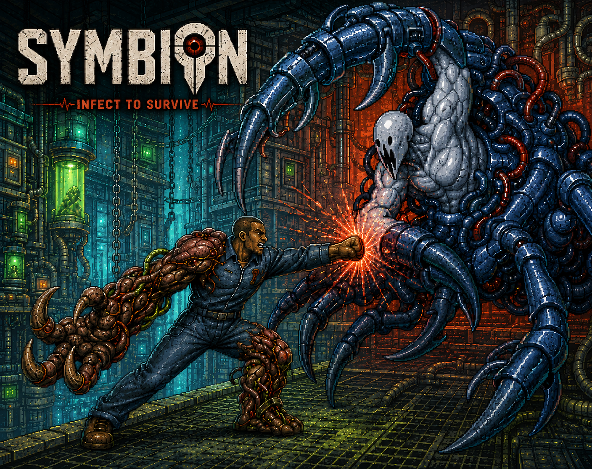

01 / SYMBION
액션 플랫포머2026.07 — 09
심비온SYMBION
플레이어의 피드백에서
진짜 재미의 실마리를 찾다.
보스 전투에 대한 긍정적인 피드백을 바탕으로, 일반 스테이지를 줄이고 보스 러시 중심으로 플레이 경험을 개선했습니다.
3.5×
업데이트 당일 플레이 유저 수
이전 최고 기록 대비 · 자기소개서 수록 사례
매일 발전하고 학습하는 콘텐츠 기획자, 김제연입니다.
익숙한 경험에서 새로운 가능성을 찾고,
플레이어의 반응으로 더 나은 재미를 만들어갑니다.

01 / SELECTED WORK
플레이어의 피드백에서
진짜 재미의 실마리를 찾다.
보스 전투에 대한 긍정적인 피드백을 바탕으로, 일반 스테이지를 줄이고 보스 러시 중심으로 플레이 경험을 개선했습니다.
업데이트 당일 플레이 유저 수
이전 최고 기록 대비 · 자기소개서 수록 사례
작은 팀에서 시스템과 밸런스를 함께 설계한 첫 프로젝트.
기업협약 프로젝트 · 예정
02 / MY APPROACH
다양한 게임을 깊이 플레이하며, 익숙한 요소가 새로운 재미로 연결되는 순간을 관찰합니다.
플레이어의 반응을 수집하고, 핵심 재미를 찾아 실제 플레이 경험의 개선으로 이어갑니다.
함께 만드는 사람의 작업을 이해하기 위해 학습합니다. 명확한 기획으로 팀에 안정감을 주고 싶습니다.
게임을 좋아하는 마음에서 시작해, 함께 만들 수 있는 역량으로.
LET’S MAKE THE NEXT PLAY.
이력서 · 2026
매일 발전하고 학습하는 컨텐츠 기획자
프로젝트 · 실무 경험
내 역할 : 팀장 | 이미지 리소스 제작, 시스템 구축
데이터, 밸런스 담당 | 데이터 테이블 작성, 레벨 디자인, 밸런스 담당
내 역할: 팀장 | 이미지 리소스 제작, 보스 패턴 기획, 스킬 기획, 시스템 보조
시스템 | 전투 시스템, 버그 픽스
애니메이션 | QA총괄, 애니메이션 스프라이트 시트 제작, 이미지 리소스 보조
PM | 마케팅 팀 팀장, 팀 일정 관리, 데이터 테이블 작성, TC 작성
레벨 디자인 | 맵 배치, 마케팅 보조, QA
itch.io 지표
방문자 수 : 348
플레이 수/ 다운로드 수 : 115/21
활용 기술
MS Office
문서 작성 · 데이터 테이블
Obsidian
개인 위키 · Markdown 문서
Figma
협업 기획서 · 플로우 차트
Notion
일정 관리 · 팀 게시판
Unity
씬 · 프리팹 제작 및 배치
GitHub
커밋 · 브랜치 · 이력 관리
AI 도구
웹 프로토타입 · 리소스 · 간이 툴
게임 경험
 이터널 리턴
이터널 리턴플레이 시간 3,954.0시간
 Shadowverse: Worlds Beyond
Shadowverse: Worlds Beyond플레이 시간 835.2시간
 PUBG: BATTLEGROUNDS
PUBG: BATTLEGROUNDS플레이 시간 760.7시간
 톰 클랜시의 레인보우식스 시즈
톰 클랜시의 레인보우식스 시즈플레이 시간 555.6시간
 Palworld / 팰월드
Palworld / 팰월드플레이 시간 291.6시간
 Last Epoch
Last Epoch플레이 시간 211.1시간
 소녀전선2: 망명
소녀전선2: 망명플레이 시간 136.6시간
 Yu-Gi-Oh! Master Duel
Yu-Gi-Oh! Master Duel플레이 시간 128.9시간
 Terraria
Terraria플레이 시간 123.4시간
 아일렛 온라인 : 크래프트
아일렛 온라인 : 크래프트플레이 시간 89.4시간
 Valheim
Valheim플레이 시간 74.7시간
 동방광요야 ~ Lost Branch of Legend
동방광요야 ~ Lost Branch of Legend플레이 시간 68시간
 Core Keeper
Core Keeper플레이 시간 62.2시간
 Don't Starve Together
Don't Starve Together플레이 시간 59.6시간
 Sid Meier's Civilization VI
Sid Meier's Civilization VI플레이 시간 56.9시간
 Shadowverse
Shadowverse플레이 시간 51.3시간
 비비드 월드
비비드 월드플레이 시간 49.3시간
 작혼: 리치 마작
작혼: 리치 마작플레이 시간 47.4시간
 Slay the Spire 2
Slay the Spire 2플레이 시간 46.3시간
 R.E.P.O.
R.E.P.O.플레이 시간 39.7시간
 팀파이트 매니저
팀파이트 매니저플레이 시간 39.3시간
 보이드 다이버 : Escape from the Abyss Demo
보이드 다이버 : Escape from the Abyss Demo플레이 시간 35.4시간
 For The King
For The King플레이 시간 35.2시간
 No One Survived
No One Survived플레이 시간 35시간
 Railway Empire
Railway Empire플레이 시간 33.5시간
 No Man's Sky
No Man's Sky플레이 시간 32.5시간
 Balatro
Balatro플레이 시간 32시간
 Dark and Darker Playtest
Dark and Darker Playtest플레이 시간 30.6시간
 꼬미 (Little LUMI Model)
꼬미 (Little LUMI Model)플레이 시간 29시간
 Schedule I
Schedule I플레이 시간 27시간
 Lethal Company
Lethal Company플레이 시간 23.4시간
 Lobotomy Corporation
Lobotomy Corporation플레이 시간 19시간
 ContractVille
ContractVille플레이 시간 18.5시간
 Muse Dash
Muse Dash플레이 시간 16.4시간
 Bongo Cat
Bongo Cat플레이 시간 16시간
 Back 4 Blood
Back 4 Blood플레이 시간 15.9시간
 9 Kings 나인 킹즈
9 Kings 나인 킹즈플레이 시간 15.6시간
 Monster Hunter: World
Monster Hunter: World플레이 시간 15.2시간
 Dawn of Man
Dawn of Man플레이 시간 15.2시간
 Stardew Valley
Stardew Valley플레이 시간 15.1시간
 썸썸 편의점
썸썸 편의점플레이 시간 14.9시간
 Escape from Duckov
Escape from Duckov플레이 시간 14.8시간
 Necesse: 네세스
Necesse: 네세스플레이 시간 14.7시간
 Founders' Fortune
Founders' Fortune플레이 시간 14시간
 ZERO Sievert
ZERO Sievert플레이 시간 13.6시간
 Banished
Banished플레이 시간 12.5시간
 Project Zomboid
Project Zomboid플레이 시간 11.8시간
 Raft
Raft플레이 시간 11.5시간
 Medieval Dynasty
Medieval Dynasty플레이 시간 10.9시간
 크로노 아크
크로노 아크플레이 시간 10.3시간
 BattleBit Remastered
BattleBit Remastered플레이 시간 10.1시간
 PEAK
PEAK플레이 시간 9.3시간
 Slay the Spire
Slay the Spire플레이 시간 9.2시간
 The Long Dark
The Long Dark플레이 시간 8.7시간
 The Forever Winter
The Forever Winter플레이 시간 8.2시간
 투 포인트 뮤지엄
투 포인트 뮤지엄플레이 시간 8시간
 Stacklands
Stacklands플레이 시간 7.4시간
 F1® 25
F1® 25플레이 시간 7.3시간
 인슈라오디드 (Enshrouded)
인슈라오디드 (Enshrouded)플레이 시간 7.3시간
 동방야작식당 - Touhou Mystia's Izakaya
동방야작식당 - Touhou Mystia's Izakaya플레이 시간 7.1시간
 Passpartout: The Starving Artist
Passpartout: The Starving Artist플레이 시간 6.9시간
 Novena Diabolos
Novena Diabolos플레이 시간 6.8시간
 세피리아
세피리아플레이 시간 6.6시간
 Two Point Campus
Two Point Campus플레이 시간 6.5시간
 Stellaris
Stellaris플레이 시간 6.4시간
 Magical Girl Witch Trials
Magical Girl Witch Trials플레이 시간 6.3시간
 Cubic Odyssey
Cubic Odyssey플레이 시간 6.1시간
 Dinkum (딩컴)
Dinkum (딩컴)플레이 시간 6.1시간
 이환
이환플레이 시간 6.1시간
 Manor Lords 매너 로드
Manor Lords 매너 로드플레이 시간 5.9시간
 HoloCure - Save the Fans!
HoloCure - Save the Fans!플레이 시간 5.8시간
 이브 온라인
이브 온라인플레이 시간 5.5시간
 옛날 재래시장 시뮬레이터
옛날 재래시장 시뮬레이터플레이 시간 5.3시간
 Content Warning
Content Warning플레이 시간 5.2시간
 Two Point Hospital
Two Point Hospital플레이 시간 5.2시간
 데이브 더 다이버
데이브 더 다이버플레이 시간 5.2시간
 Ale & Tale Tavern
Ale & Tale Tavern플레이 시간 5.2시간
 Crime Simulator
Crime Simulator플레이 시간 5.1시간
 TCG Card Shop Simulator
TCG Card Shop Simulator플레이 시간 4.8시간
 Human Fall Flat
Human Fall Flat플레이 시간 4.5시간
 기적의 분식집
기적의 분식집플레이 시간 4.5시간
 Shotgun King: The Final Checkmate
Shotgun King: The Final Checkmate플레이 시간 4.4시간
 Sea of Thieves
Sea of Thieves플레이 시간 4시간
 The Cycle Playtest
The Cycle Playtest플레이 시간 4시간
 ARK: Survival Evolved
ARK: Survival Evolved플레이 시간 3.8시간
 Besiege
Besiege플레이 시간 3.8시간
 Goat Simulator
Goat Simulator플레이 시간 3.6시간
 그랑프리 스토리 (Grand Prix Story)
그랑프리 스토리 (Grand Prix Story)플레이 시간 3.3시간
 Doki Doki Literature Club
Doki Doki Literature Club플레이 시간 3.1시간
 서브노티카 2
서브노티카 2플레이 시간 3시간
게임 기록 2021.05~2026.01
저는 제가 한 작업이 결과물로 확인 할 수 있는 게임 기획자가 되기 위해 귀사에 지원했습니다.
저는 게임 기획자가 끝없이 학습하고, 경험을 쌓아 한계 없이 발전할 수 있는 직업이라고 생각합니다.
이 것이 저에게 매력적으로 다가오기에 게임 기획자가 되고자 합니다.
한 게임에 있던 요소가 다른 게임에 채택되어 그 게임에 맞게 변형되거나, 융합되며 색다른 재미로 탄생하는 과정을 경험하는 것은 제가 새로운 게임을 계속 탐색해 나갈 수 있는 동기가 되어 줍니다.
저는 계속 새로운 경험을 쌓아나가고 있으며, 이것을 이용하여 융합되거나 기존의 것을 변형하여 타겟층 플레이어에게 거부감 없는 새로움을 느끼는 게임을 만들고 싶습니다.
게임 기획자의 꿈을 갖고 처음 학원에 들어왔을 때, 저는 제로베이스였습니다. 게임 경험만을 가지고 있는 상태였습니다.
office 툴의 사용도 미숙했으며, 사용되는 용어들도 잘 모르는 상태였습니다.
특히 과제 제출 후 다 같이 피드백을 받는 자리에서 동기들과의 실력차를 여실히 느꼈습니다.
저는 따라가야 한다는 마음을 동력으로 삼아 수업 종료 후 개인시간에 역량강화에 힘썼습니다.
office 를 사용하여 수업에 했던 것을 따라해 보고, 인터넷 강의 를 찾아 익혔습니다.
모르는 것은 주변 동기들에게 물어보며 익혔습니다.
학원에 오기 전 AI를 전혀 사용하지 않았기에, 사용법을 익혔습니다.
2개월이 지난 후 수업을 따라갈 수 있게 되었고, 관련 용어들이 익숙하게 들리기 시작했습니다.
목표 달성 이후에도 저는 계속해서 개인 학습을 추가로 이어가고 있으며 이것이 루틴으로 자리 잡혀 있습니다.
학습하여 익숙해진 툴 사용, 용어 사용 등이 주변 동기들과 협업 중 소통에 도움을 준다는 것을 체험했습니다.
제 게임 경험을 설명할 때에도 선명도 높게 설명할 수 있습니다.
이 때 저는 학습을 통해 상대의 작업에 대해 많이 알고 있을 때 소통이 원활히 된다는 것을 깨달았습니다.
소통과 표현은 많은 경험, 공부, 배경 지식 등이 도움을 줄 수 있습니다.
이것들은 앞으로의 기획자로 업무를 진행할 때 필요한 능력입니다.
앞으로도 개인적인 학습, 연구를 통한 발전을 끊임없이 하는 기획자가 되고자 합니다.
저에게 있어 가장 어려웠던 경험은 2026년 7월부터 시작하여 9월까지 진행 한 팀 프로젝트에서 얼리엑세스 단계까지 진행된 게임에서 부정적인 피드백을 많이 받았던 경험입니다.
당시 만든 프로젝트 게임 심비온에서 "재미가 없다" " 지루하다" 등의 피드백이 주를 이뤘습니다.
저는 이 문제를 해결하기 위해 더 많은 플레이 피드백을 수집한 후 팀 회의를 시작했습니다.
수집된 피드백 데이터를 기반으로 저희 게임의 핵심 재미 요소 내에서 재미를 강조 할 부분을 선정했습니다.
긍정적인 피드백이 많았던 "보스 전투" 컨텐츠를 강조하여 일반 스테이지 비중을 줄이고 보스 러쉬 스타일로 정식 출시 전 빠른 업데이트 플랜을 짰습니다.
정식 출시까지 남은 시간이 부족한 만큼 최대한의 리소스 재활용이 가능한 방법으로 업데이트를 진행했습니다.
이 업데이트 결과로 저희 프로젝트의 게임은 itch.io 에서 업데이트 당일 이전 고점 대비 3.5배의 플레이 유저 수를 확보했습니다.
프로젝트를 처음부터 다시 한다면, 프로토타입 단계에서 재미 요소 검증에 더 많은 시간을 들여 게임의 문제점을 앞선 단계에서 발견하여 여유 있는 작업시간을 구성하여 게임의 완성도를 높일 것입니다.
저는 협업자들에게 안정감과 믿음을 줄 수 있는 기획자가 되는 것이 미래의 목표입니다.
이를 위해 많은 경험과 실력을 쌓아야 하며 협업자들의 언어를 알고 소통하여 불협화음을 줄여야 합니다.
단기적으로 귀사에 취업하여 선배 기획자분들께 배움을 받고 경험을 쌓는 과정과 함께 끊임없는 학습을 통해 발전하고, 이를 활용하여 안정감과 믿음을 줄 수 있는 기획자가 되겠습니다.
프로젝트 기록
페이지 업데이트 노트
날짜별 변경 기록.
첨부 문서
첨부 문서를 선택하세요
문서가 보이지 않으면 새 창에서 PDF 열기 ↗
새 프로그램
설명을 입력하세요
게임 기록 0